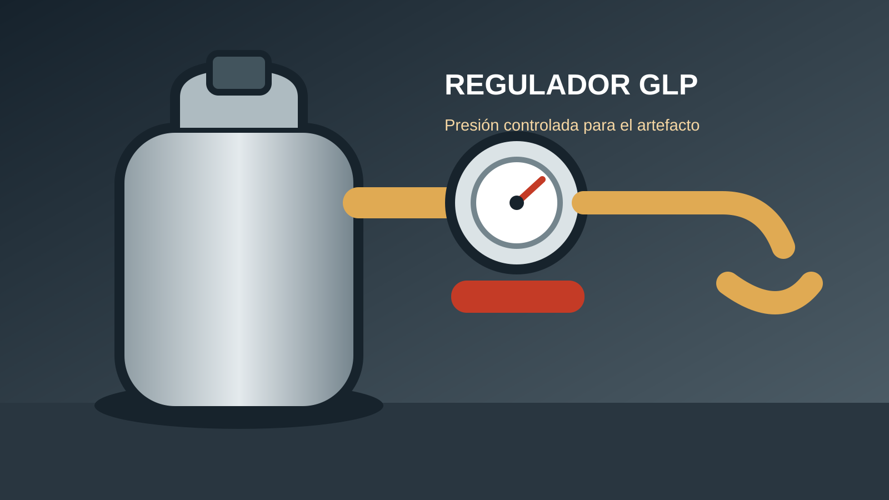

Un regulador para gas es un dispositivo que recibe el gas a una presión variable y lo entrega a una presión más baja y controlada para que un artefacto pueda funcionar de forma estable. Se utiliza en cilindros, estanques y determinadas instalaciones de gas licuado de petróleo (GLP), pero no todos los reguladores son iguales. La presión de salida, el caudal, la conexión, el tipo de gas y el uso previsto deben coincidir con la placa del artefacto y con las exigencias de la instalación.

¿Qué es un regulador para gas?
Un regulador para gas, también llamado regulador de presión, es un conjunto mecánico que utiliza un diafragma, un resorte y una válvula para mantener la presión de salida dentro de un rango definido. La presión dentro de un cilindro de GLP depende principalmente de la temperatura y de la composición del gas mientras exista fase líquida. El nivel de líquido determina sobre todo la autonomía y, durante consumos altos, puede influir en el enfriamiento y en la capacidad de vaporización. Sin regulación, esa presión no sería adecuada para alimentar directamente una cocina, calefón, estufa o quemador.
El regulador no “fabrica” gas, no aumenta la potencia del artefacto y no reemplaza una válvula de corte. Su función es estabilizar la entrega y limitar la presión que llega a la línea de consumo. Algunos modelos incorporan una válvula de seguridad, un indicador o un sistema de exceso de flujo, pero esas funciones dependen del producto y no deben suponerse si no aparecen en la ficha técnica.
¿Para qué sirve un regulador de gas?
Un regulador tiene una capacidad máxima de caudal especificada por el fabricante; no es un controlador de caudal que aumente o reduzca libremente el consumo del artefacto. Si esa capacidad es insuficiente, la presión puede caer cuando aumenta la demanda.
- Reduce la presión: transforma la presión del cilindro o estanque en una presión de utilización.
- Estabiliza la alimentación: compensa parte de las variaciones normales de presión y consumo.
- Limita el caudal disponible: cada modelo tiene una capacidad máxima; si es insuficiente, el artefacto puede perder rendimiento.
- Protege la instalación: un regulador adecuado disminuye el riesgo de sobrepresión en la línea de consumo.
- Facilita la compatibilidad: permite conectar una fuente de GLP con un equipo diseñado para una presión determinada.
Un regulador no corrige una fuga, una manguera vencida, un inyector obstruido, una ventilación deficiente ni una instalación mal ejecutada. Tampoco debe utilizarse para “solucionar” una llama amarilla sin diagnosticar el artefacto y la combustión.
Tipos de reguladores para gas
Los reguladores se clasifican por el gas, la presión de entrada, la presión de salida, el caudal, el tipo de conexión y la aplicación. En una vivienda, el dato más importante suele ser la presión de salida exigida por el artefacto. Los valores que aparecen en las etiquetas comerciales pueden expresarse en mbar, kPa, bar o milímetros de columna de agua; no los compares sin convertir unidades correctamente.
| Tipo de aplicación | Qué se debe revisar | Uso habitual |
|---|---|---|
| Baja presión para artefactos domésticos | Presión de salida, caudal y conexión del cilindro | Cocinas, calefones o estufas compatibles con GLP |
| Regulador de segunda etapa | Presión de entrada permitida y presión final requerida | Instalaciones con más de una etapa de regulación |
| Regulador de alta presión | Rango de entrada, salida, caudal y dispositivo de seguridad | Quemadores o equipos diseñados para mayor presión |
| Regulador para cilindro o estanque específico | Válvula, rosca, orientación y certificación | Fuentes de GLP con conexiones determinadas |
| Regulador industrial | Materiales, diafragma, estabilidad y consumo elevado | Procesos, rampas y equipos profesionales |
Los reguladores de segunda etapa solo se utilizan cuando la primera etapa, la presión intermedia, las tuberías y los artefactos fueron diseñados como un sistema. No deben conectarse directamente a un cilindro ni intercambiarse por un regulador de primera etapa sin verificar la ficha técnica y el proyecto completo.
La presión puede expresarse en mbar, kPa, bar o milímetros de columna de agua. No conviertas ni compares valores sin revisar las unidades: toma la presión exigida directamente de la placa y del manual del artefacto.
Presión, caudal y consumo: no son lo mismo
La presión indica la fuerza por unidad de superficie; el caudal indica cuánto gas puede pasar por unidad de tiempo; el consumo del artefacto depende de su potencia y eficiencia. Un regulador puede tener la presión correcta pero un caudal insuficiente. En ese caso la llama puede funcionar al principio y debilitarse cuando se encienden otros quemadores o cuando el equipo exige su máxima potencia.
Para revisar la compatibilidad, anota la potencia del artefacto en kW o kcal/h, el tipo de gas, la presión nominal y el consumo indicado por el fabricante. Luego compara esos datos con la capacidad del regulador. No intentes calcular la capacidad únicamente mirando el diámetro de la manguera o la apariencia de la conexión.
Ejemplo de lectura técnica
Si una placa indica GLP y una presión de alimentación específica, el regulador debe entregar esa presión en el punto de entrada del artefacto, considerando además la pérdida de carga de la manguera y de la tubería. Un regulador con mayor caudal nominal no necesariamente es compatible si su presión de salida es distinta. La presión debe verificarse con un manómetro y un procedimiento apropiado, no “a ojo” por el tamaño de la llama.
Cómo elegir un regulador para gas
- Identifica el gas: confirma si el equipo usa GLP, gas natural u otro combustible. Un regulador de GLP no debe instalarse en una red de gas natural sin autorización y especificación expresa.
- Lee la placa del artefacto: registra presión nominal, potencia, consumo y tipo de conexión.
- Comprueba el cilindro: verifica la válvula y la conexión compatible con el regulador. No fuerces roscas ni uses adaptadores improvisados.
- Calcula la demanda simultánea: si una fuente alimenta varios artefactos, suma sus consumos según el diseño y considera la etapa de regulación correspondiente.
- Selecciona el caudal: el regulador debe cubrir el consumo máximo sin trabajar permanentemente en el límite.
- Revisa certificación y trazabilidad: busca marca, modelo, presión, capacidad, sentido de flujo, fecha o lote cuando corresponda y documentación del fabricante.
- Considera el ambiente: humedad, exposición solar, corrosión, temperatura y ubicación afectan la vida útil.
En Chile, la instalación, modificación, diagnóstico y reparación de redes o conexiones de gas debe realizarse conforme a la reglamentación aplicable por un instalador autorizado por la SEC. Consulta la información de la Superintendencia de Electricidad y Combustibles (SEC). El usuario puede hacer una inspección visual y cerrar el suministro ante una emergencia, pero no debe desmontar, ajustar ni reemplazar componentes presurizados sin autorización y competencia técnica.
Instalación y comprobación segura
Antes de instalar, cierra la válvula del cilindro, ventila el espacio y elimina cualquier fuente de ignición. No fumes, no uses interruptores eléctricos innecesarios y no pruebes fugas con una llama. Revisa que la manguera sea apta para gas, que no esté vencida ni agrietada y que las abrazaderas o terminales sean los indicados para el sistema.
Procedimiento de comprobación visual
- Confirma que el regulador corresponde al tipo de gas, presión y conexión del artefacto.
- Comprueba visualmente la carcasa, las conexiones, la junta y las señales externas de daño o corrosión. El diafragma normalmente está dentro de la carcasa y no debe exponerse.
- No fuerces ni cruces la rosca. Una conexión de gas puede requerir una llave adecuada y un par de apriete indicado por el fabricante; el instalador autorizado debe realizar la conexión.
- Abre la válvula lentamente solo cuando el conjunto esté correctamente instalado y aplica una solución detectora de fugas en las uniones.
- Observa si aparecen burbujas que crecen. Si ocurre, cierra el gas, ventila y solicita asistencia profesional.
- Enciende el artefacto siguiendo el manual y observa la estabilidad de la llama.
- Si la instalación lo requiere, el instalador debe verificar la presión con un instrumento calibrado y registrar el resultado.
Qué aspecto debe tener la llama
La apariencia de la llama depende del artefacto y del combustible, pero una llama persistentemente amarilla, inestable, ruidosa o que se desprende del quemador requiere revisión. Puede indicar falta de aire, inyector incorrecto, presión inadecuada, suciedad, ventilación insuficiente o un problema de combustión. No ajustes el regulador ni agrandes inyectores para “mejorar” la llama sin el procedimiento del fabricante.
Una combustión deficiente puede producir monóxido de carbono, un gas tóxico que no tiene olor ni color confiable. Mantén ventilación y evacuación de gases según el tipo de artefacto. No uses una cocina, calefón o estufa en un espacio para el que no fue diseñado, y nunca bloquees rejillas de ventilación.
Fallas frecuentes y mantenimiento
| Síntoma | Posibles causas | Qué hacer |
|---|---|---|
| La llama se debilita con varios quemadores | Caudal insuficiente, cilindro frío o regulador inadecuado | Apagar, revisar la ficha y solicitar diagnóstico. |
| Olor a gas en la conexión | Junta dañada, rosca incorrecta, manguera o regulador defectuoso | Cerrar el suministro y no usar el equipo hasta corregir. |
| Regulador con ruido o vibración | Diafragma deteriorado, suciedad o presión fuera de rango | No golpear ni abrir; reemplazar o revisar profesionalmente. |
| Llama amarilla persistente | Combustión incompleta, inyector sucio o falta de aire | Suspender el uso y revisar ventilación y artefacto. |
| Conector corroído o manguera rígida | Envejecimiento, humedad, químicos o calor | Cambiar por componentes aprobados para gas. |
Inspecciona visualmente el conjunto antes de cada uso intensivo y reemplaza el regulador según la vida útil indicada por el fabricante, aunque todavía parezca funcionar. El envejecimiento interno del diafragma puede no ser visible. No desmontes un regulador presurizado ni intentes repararlo con piezas genéricas.
Guías relacionadas
Para complementar esta información, revisa nuestra guía sobre cómo calcular el consumo de una estufa a gas, las herramientas básicas de gasfitería y la información sobre fallas de bombas de agua. Cada equipo tiene requisitos propios: usa siempre el manual y la placa del fabricante como referencia principal.
Preguntas frecuentes
¿Qué es un regulador para gas?
Es un dispositivo que reduce y estabiliza la presión del gas antes de que llegue al artefacto. Su modelo debe coincidir con el combustible, la presión de trabajo, el caudal y la conexión de la instalación.
¿Para qué sirve el regulador de un balón de gas?
Sirve para entregar al artefacto una presión controlada desde el cilindro. La presión interna del cilindro cambia con la temperatura y el consumo, por lo que no debe conectarse directamente a una cocina o estufa.
¿Puedo usar cualquier regulador en una cocina?
No. Debes comprobar el tipo de gas, presión de salida, caudal, conexión y especificación del fabricante. Un regulador de alta presión o para otro combustible puede ser peligroso.
¿Cada cuánto se cambia un regulador de gas?
Depende del fabricante, el modelo, el ambiente y la normativa aplicable. Reemplázalo si presenta daño, corrosión, ruido, fuga, envejecimiento o si supera la vida útil indicada, aunque la llama parezca normal.
¿Cómo puedo saber si hay una fuga?
Con el suministro abierto solo cuando sea seguro, aplica una solución detectora de fugas en las uniones. Burbujas que crecen indican una fuga. Nunca uses una llama para comprobarla.
¿Qué hago si siento olor a gas?
No enciendas ni apagues interruptores, ventila desde un lugar seguro, cierra el suministro si no implica riesgo, evacua y contacta al proveedor o a los servicios de emergencia. No vuelvas a usar la instalación hasta que sea revisada.
¿Necesitas más información para tu instalación?
Consulta nuestras guías de gasfitería, consumo de artefactos y mantenimiento del hogar.
Ver más guías de Ferretería Ukra